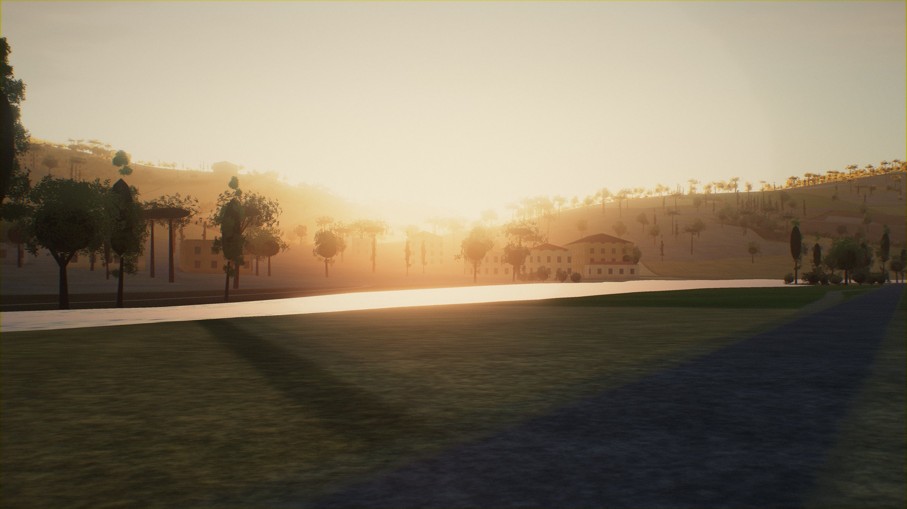

Where to today?

Tiber river park
Ponte San Giovanni to Ponte Felcino, below the hill of Perugia 10.9 km · flat · about 35 min Now: Clear · 14° · light breezeHills feel 35 % · easy Wind feel subtle

Hills feel 35 % · easy Wind feel subtle